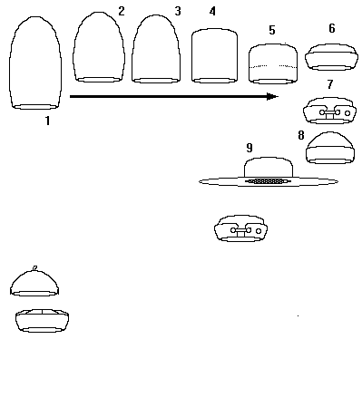

Felt Caps

- Italian Hat (c1480)
Red Cloth
- An intermediate "sugarloaf" step
- An intermediate "sugarloaf" step
- An intermediate "sugarloaf"/Fez step
- An Shortened from flatttened cylinder, this is essentially the body of the hat with the
brim unfolded.
- Basic "cap" (14th century on)
- Milan or Tudor Bonnet (c1470s- )
- Calotte or Cap, Skull cap.
This basic design prevailed for centuries with only minor changes. A version of it with a
flipped up and enlarged brim is worn today as a "sailor's cap".
- The Broad Brimmed felt hat was rare, but present in the Middle Ages, just as it is
today.
- Academic Cap (c13th Century)
"Late Medieval"
- (14th Century)
Some Headwear of the Middle Ages - Felt Caps, by I. Marc Carlson. Copyright 1996.